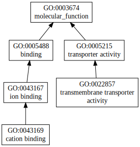
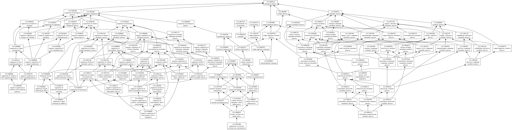

|

|
| Download full result of the above consensus prediction. |
| Click the graph to show a high resolution version. |
| (a) | CscoreGO is the confidence score of predicted GO terms. CscoreGO values range in between [0-1]; where a higher value indicates a better confidence in predicting the function using the template. |
| (b) | The graph shows the predicted terms within the Gene Ontology hierachy for Molecular Function. Confidently predicted terms are color coded by CscoreGO: |
| | [0.13,0.5) | [0.5,0.6) | [0.6,0.7) | [0.7,0.8) | [0.8,0.9) | [0.9,1.0] |
|
|
|

|
| GO term | CscoreGO | Name |
| GO:0009987 | 0.04 | cellular process |
| GO:0050794 | 0.02 | regulation of cellular process |
| GO:0044763 | 0.02 | single-organism cellular process |
| GO:0090305 | 0.01 | nucleic acid phosphodiester bond hydrolysis |
| GO:0090090 | 0.01 | negative regulation of canonical Wnt signaling pathway |
| GO:0060964 | 0.01 | regulation of gene silencing by miRNA |
| GO:0055085 | 0.01 | transmembrane transport |
| GO:0051480 | 0.01 | regulation of cytosolic calcium ion concentration |
| GO:0046133 | 0.01 | pyrimidine ribonucleoside catabolic process |
| GO:0045892 | 0.01 | negative regulation of transcription, DNA-templated |
| Download full result of the above consensus prediction. |
| Click the graph to show a high resolution version. |
| (a) | CscoreGO is the confidence score of predicted GO terms. CscoreGO values range in between [0-1]; where a higher value indicates a better confidence in predicting the function using the template. |
| (b) | The graph shows the predicted terms within the Gene Ontology hierachy for Biological Process. Confidently predicted terms are color coded by CscoreGO: |
| | [0.08,0.5) | [0.5,0.6) | [0.6,0.7) | [0.7,0.8) | [0.8,0.9) | [0.9,1.0] |
|
|

|
| Download full result of the above consensus prediction. |
| Click the graph to show a high resolution version. |
| (a) | CscoreGO is the confidence score of predicted GO terms. CscoreGO values range in between [0-1]; where a higher value indicates a better confidence in predicting the function using the template. |
| (b) | The graph shows the predicted terms within the Gene Ontology hierachy for Cellular Component. Confidently predicted terms are color coded by CscoreGO: |
| | [0.14,0.5) | [0.5,0.6) | [0.6,0.7) | [0.7,0.8) | [0.8,0.9) | [0.9,1.0] |
|
|
|